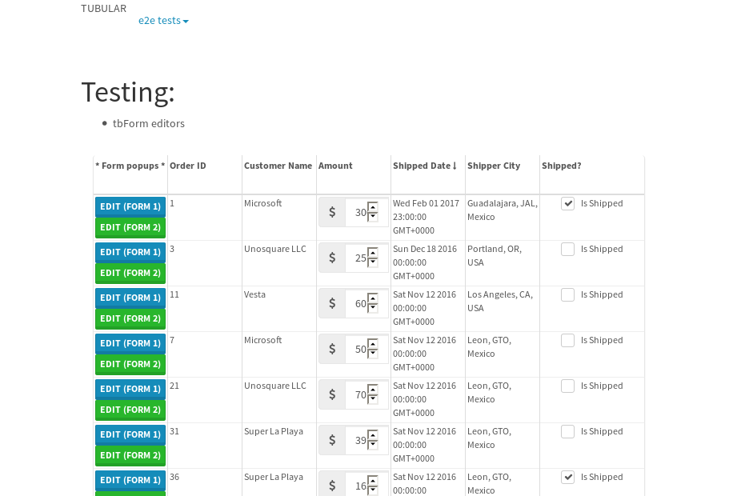
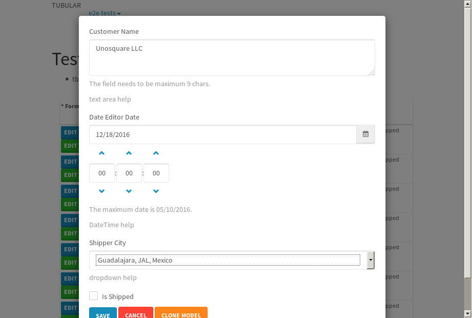
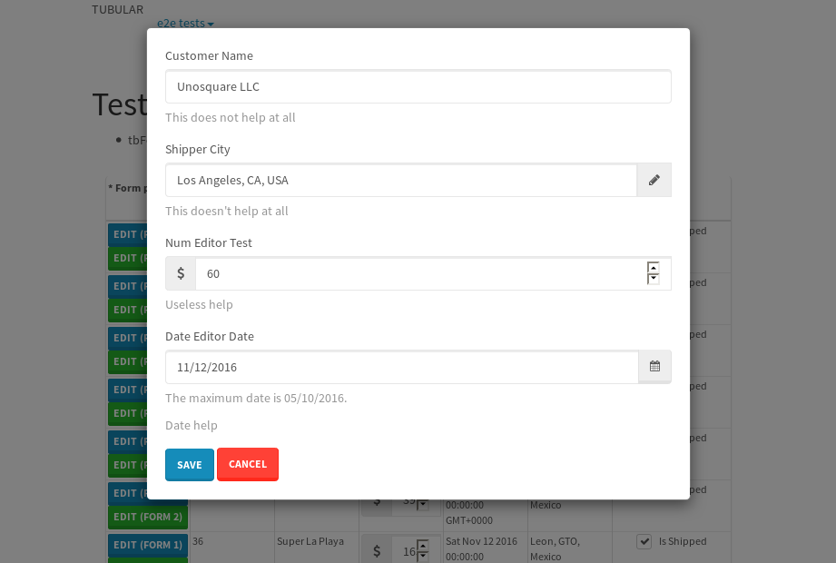
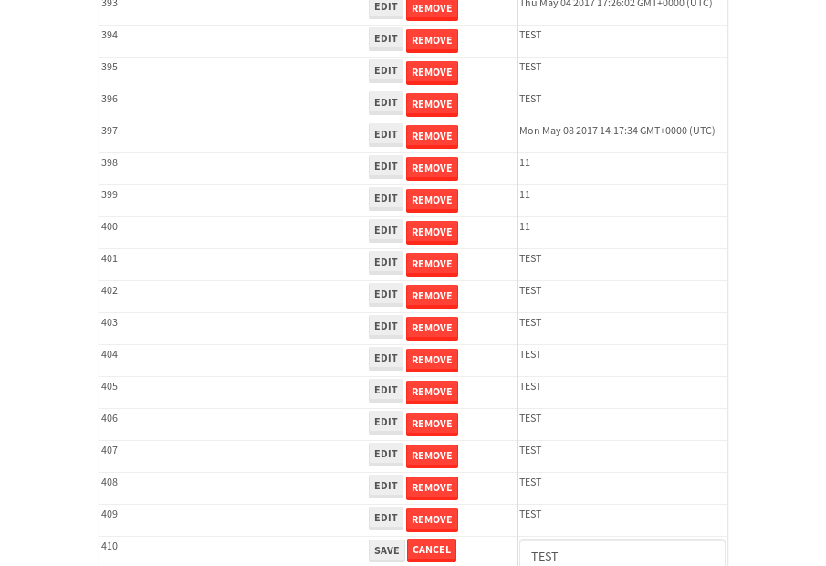
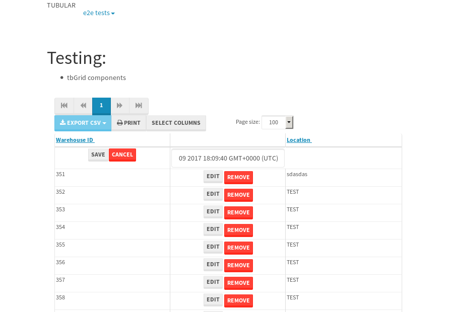

tbColumn.Grid Sorting - 28.591sTests: 5Skipped: 0Failures: 0 should sort data in ascending order then on descending order when sorting by Order Id column - 6.47sTests passed: 100.00%should order data in ascending order when click-sorting an unsorted text column - 6.393sTests passed: 100.00%should order data in descending order when click-sorting an ascending-sorted text column - 5.438sTests passed: 100.00%should order data in ascending order when click-sorting an unsorted date column - 4.853sTests passed: 100.00%should order data in descending order when click-sorting twice an unsorted date column - 5.435sTests passed: 100.00%
tbEmptyForm - 4.972sTests: 3Skipped: 0Failures: 0 should have an empty required field - 1.881sTests passed: 100.00%should not be able to click on save - 0.027sTests passed: 100.00%should load default value for numeric field - 0.036sTests passed: 100.00%
Tubular Filters.tbColumnFilter - 98.477sTests: 12Skipped: 0Failures: 0 should cancel filtering when clicking outside filter-popover - 7.757sTests passed: 100.00%should disable Value text-input for "None" filter - 5.683sTests passed: 100.00%should disable apply button for "None" filter - 5.837sTests passed: 100.00%should decorate popover button when showing data is being filtered for its column - 11.455sTests passed: 100.00%should correctly filter data for the "Equals" filtering option - 8.015sTests passed: 100.00%should correctly filter data for the "Not Equals" filtering option - 7.671sTests passed: 100.00%should correctly filter data for the "Contains" filtering option - 7.725sTests passed: 100.00%should correctly filter data for the "Not Contains" filtering option - 7.71sTests passed: 100.00%should correctly filter data for the "Starts With" filtering option - 6.406sTests passed: 100.00%should correctly filter data for the "Not Starts With" filtering option - 6.652sTests passed: 100.00%should correctly filter data for the "Ends With" filtering option - 6.052sTests passed: 100.00%should correctly filter data for the "Not Ends With" filtering option - 6.002sTests passed: 100.00%
Tubular Filters.tbColumnDateTimeFilter - 125.19sTests: 12Skipped: 0Failures: 0 should cancel filtering when clicking outside filter-popover - 6.257sTests passed: 100.00%should disable Value text-input for "None" filter - 5.601sTests passed: 100.00%should disable apply button for "None" filter - 6.226sTests passed: 100.00%should clear filtering when clicking on Clean button - 16.743sTests passed: 100.00%should decorate popover button when showing data is being filtered for its column - 11.067sTests passed: 100.00%should correctly filter data for the "Equals" filtering option - 6.398sTests passed: 100.00%should correctly filter data for the "Not Equals" filtering option - 6.567sTests passed: 100.00%should correctly filter data for the "Between" filtering option - 11.094sTests passed: 100.00%should correctly filter data for the "Greater-or-equal" filtering option - 11.011sTests passed: 100.00%should correctly filter data for the "Greater" filtering option - 10.953sTests passed: 100.00%should correctly filter data for the "Less-or-equal" filtering option - 11.071sTests passed: 100.00%should correctly filter data for the "Less" filtering option - 11.131sTests passed: 100.00%
Tubular Filters.tbColumnOptionsFilter - 79.219sTests: 3Skipped: 0Failures: 0 should cancel filtering when clicking outside filter-popover - 8.111sTests passed: 100.00%should decorate popover button when showing data is being filtered for its column - 10.876sTests passed: 100.00%should filter column-elements in accordance to the selected filter when selecting a single option - 48.708sTests passed: 100.00%
Tubular Filters.tbTextSearch - 44.326sTests: 5Skipped: 0Failures: 0 min-chars is not set - 0.151sTests passed: 100.00%should filter data in searchable-column customer name to matching inputted text, starting from 3 characters - 5.964sTests passed: 100.00%should filter data in searchable-column shipper city to matching inputted text, starting from 3 characters - 11.146sTests passed: 100.00%should show clear button when there is inputted text only - 5.761sTests passed: 100.00%should clear filtering when clicking clear button - 15.625sTests passed: 100.00%
tbForm related components.tbCheckboxField - 4.252sTests: 2Skipped: 0Failures: 1 should save changes on "SAVE" - 1.18sExpected 51 to be -1.✗Tests passed: 50.00%should discard changes on "CANCEL" - 1.189sTests passed: 100.00%
tbForm related components.tbDropDownEditor - 5.268sTests: 5Skipped: 0Failures: 1 should set initial input value to the value of "value" attribute when defined - 0.704sTests passed: 100.00%should show the component name value in a label field when "showLabel" attribute is true - 0.887sTests passed: 100.00%should show a help field equal to this attribute, is present - 0.911sTests passed: 100.00%should submit modifications to item/server when clicking form "Save" - 0.994sTests passed: 100.00%should NOT submit modifications to item/server when clicking form "Cancel" - 1.172sExpected 'string:Portland, OR, USA' to match 'string:Guadalajara, JAL, Mexico'.✗Tests passed: 50.00%
tbForm related components.tbTextArea - 8.823sTests: 7Skipped: 0Failures: 0 should set initial input value to the value of "value" attribute when defined - 0.766sTests passed: 100.00%should be invalidated when the number of chars is not in the range of "min" and "max" attributes - 1.414sTests passed: 100.00%should show the component name value in a label field when "showLabel" attribute is true - 1.269sTests passed: 100.00%should show a help field equal to this attribute, is present - 0.819sTests passed: 100.00%should require the field when the attribute "required" is true - 1.476sTests passed: 100.00%should submit modifications to item/server when clicking form "Save" - 1.06sTests passed: 100.00%should NOT submit modifications to item/server when clicking form "Cancel" - 1.265sTests passed: 100.00%
tbForm related components.tbDateEditor - 6.587sTests: 6Skipped: 0Failures: 1 should set initial date value to the value of "value" attribute when defined - 0.839sTests passed: 100.00%should be invalidated when the date is not in the range of "min" and "max" attributes - 1.419sTests passed: 100.00%should show the component name value in a label field when "showLabel" attribute is true - 0.802sTests passed: 100.00%should show a help field equal to this attribute, is present - 0.717sTests passed: 100.00%should submit modifications to item/server when clicking form "Save" - 0.895sTests passed: 100.00%should NOT submit modifications to item/server when clicking form "Cancel" - 1.104sExpected false to be true.✗Tests passed: 0.00%
tbForm related components.tbTypeaheadEditor - 10.351sTests: 7Skipped: 0Failures: 2 should show an options list when there is an API-info/component entered-data - 1.444sTests passed: 100.00%should select the option clicked - 1.286sTests passed: 100.00%should show a "delete" button when an option/match is selected, and delete the option if button is clicked - 1.945sTests passed: 100.00%should show a label value equal to the component name when "showLabel" attribute is true - 0.872sTests passed: 100.00%should require a value when "require" attribute is true - 0.943sExpected false to be true.✗Tests passed: 0.00%should submit modifications to item/server when clicking form "Save" - 1.473sTests passed: 100.00%should NOT submit modifications to item/server when clicking form "Cancel" - 1.244sExpected 'Portland, OR, USA' to match 'Guadalajara, JAL, Mexico'.✗Tests passed: 0.00%
tbForm related components.tbSimpleEditor - 8.467sTests: 9Skipped: 0Failures: 1 should set initial input value to the value of "value" attribute when defined - 0.754sTests passed: 100.00%should be invalidated when the number of chars is not in the range of "min" and "max" attributes - 1.126sTests passed: 100.00%should show the component name value in a label field when "showLabel" attribute is true - 0.629sTests passed: 100.00%should set input placeholder to the value of "placeholder" attribute - 1.22sTests passed: 100.00%should validate the control using the "regex" attribute, if present - 0.843sTests passed: 100.00%should show a help field equal to this attribute, is present - 0.64sTests passed: 100.00%should require the field when the attribute "required" is true - 0.79sTests passed: 100.00%should submit modifications to item/server when clicking form "Save" - 0.841sTests passed: 100.00%should NOT submit modifications to item/server when clicking form "Cancel" - 0.982sExpected 'Vesta' to match 'Unosquare LLC'.✗Tests passed: 50.00%
tbForm related components.tbNumericEditor - 8.686sTests: 7Skipped: 0Failures: 0 should set initial component value to the value of "value" attribute when defined - 1.012sTests passed: 100.00%should be invalidated when the entered number is not in the range of "min" and "max" attributes - 1.407sTests passed: 100.00%should show the component name value in a label field when "showLabel" attribute is true - 0.856sTests passed: 100.00%should show a help field equal to this attribute, is present - 0.743sTests passed: 100.00%should require the field when the attribute "required" is true - 0.851sTests passed: 100.00%should submit modifications to item/server when clicking form "Save" - 0.932sTests passed: 100.00%should NOT submit modifications to item/server when clicking form "Cancel" - 2.24sTests passed: 100.00%
tbForm Connection Error NoModelKey - 3.756sTests: 1Skipped: 0Failures: 0 tbForm connection error functionality - 0.005sTests passed: 100.00%
tbForm Connection Error NoServerUrl - 5.124sTests: 1Skipped: 0Failures: 0 tbForm connection error functionality - 0.003sTests passed: 100.00%
tbGridComponents - 11.652sTests: 6Skipped: 0Failures: 5 should add item with newRow method - 3.915sExpected '410 EDIT REMOVE Tue May 09 2017 14:07:41 GMT+0000 (UTC)' not to be '410 EDIT REMOVE Tue May 09 2017 14:07:41 GMT+0000 (UTC)'.✗Tests passed: 50.00%should add item with newRow method and cancel action - 0.406sFailed: ElementNotVisibleError✗Tests passed: 0.00%should update item with tbSaveButton - 1.078sExpected '' to be 'TEST'.✗Tests passed: 0.00%should NOT update item on cancel Update action - 0.526sFailed: ElementNotVisibleError✗Tests passed: 0.00%should remove item with tbRemoveButton - 2.004sExpected 60 not to be 60, 'should remove the row from the table'.✗Tests passed: 50.00%should NOT remove item on cancel Remove action - 0.671sTests passed: 100.00%
tbGridPager.navigation buttons - 2.903sTests: 1Skipped: 0Failures: 0 should perform no action when clicking on the numbered navigation button corresponding to the current-showing results page - 0.708sTests passed: 100.00%
tbGridPager.navigation buttons.first/non-last results page related functionality - 0.823sTests: 2Skipped: 0Failures: 0 should disable "first" and "previous" navigation buttons when in first results page - 0.137sTests passed: 100.00%should enable "last" and "next" navigation buttons when in a results page other than last - 0.686sTests passed: 100.00%
tbGridPager.navigation buttons.last/non-first results page related functionality - 1.372sTests: 2Skipped: 0Failures: 0 should disable "last" and "next" navigation buttons when in last results page - 0.679sTests passed: 100.00%should enable "first" and "previous" navigation buttons when in a results page other than first - 0.693sTests passed: 100.00%
tbGridPager.page navigation - 5.024sTests: 5Skipped: 0Failures: 0 should go to next results page when clicking on next navigation button - 1.229sTests passed: 100.00%should go to previous results page when clicking on previous navigation button - 1.291sTests passed: 100.00%should go to last results page when clicking on last navigation button - 1.188sTests passed: 100.00%should go to first results page when clicking on first navigation button - 0.697sTests passed: 100.00%should go to corresponding results page when clicking on a numbered navigation button - 0.619sTests passed: 100.00%
tbGridPagerInfo - 6.195sTests: 2Skipped: 0Failures: 0 should show text in accordance to numbered of filter rows and current results-page - 2.1sTests passed: 100.00%should show count in footer - 0.027sTests passed: 100.00%
tbPageSizeSelctor - 16sTests: 4Skipped: 0Failures: 0 should filter up to 10 data rows per page when selecting a page size of "10" - 3.367sTests passed: 100.00%should filter up to 20 data rows per page when selecting a page size of "20" - 2.722sTests passed: 100.00%should filter up to 50 data rows per page when selecting a page size of "50" - 3.554sTests passed: 100.00%should filter up to 100 data rows per page when selecting a page size of "100" - 3.157sTests passed: 100.00%
tbSingleForm - 26.475sTests: 8Skipped: 1Failures: 1 should load correct info - 0s***Skipped***Tests passed: 0%should change customer name - 3.519sTests passed: 100.00%should save it - 3.719sExpected '' to be 'Saved'.✗Expected '' to be 'Saved'.✗Tests passed: 0.00%should clear the inputs - 3.634sTests passed: 100.00%should update - 4.24sTests passed: 100.00%should reset editor - 3.894sTests passed: 100.00%should not save if not Changes - 3.48sTests passed: 100.00%should not be able to click on save - 3.987sTests passed: 100.00%


{kind=link}
{kind=link}
{kind=link}
{kind=link}
{kind=link}
{kind=link}
{kind=link}
{kind=link}